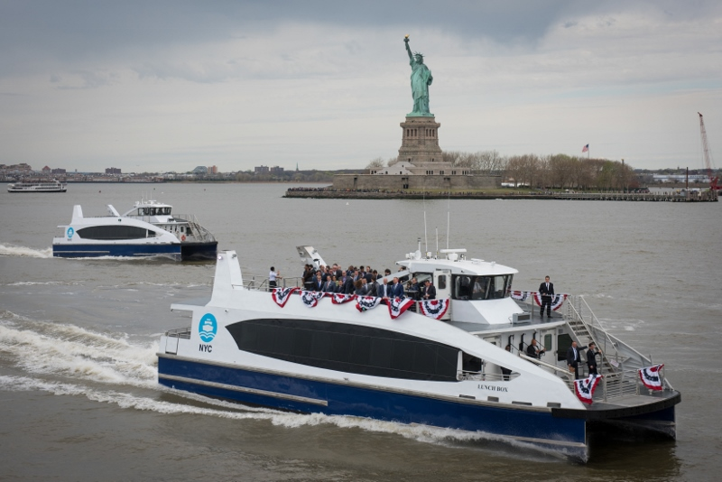
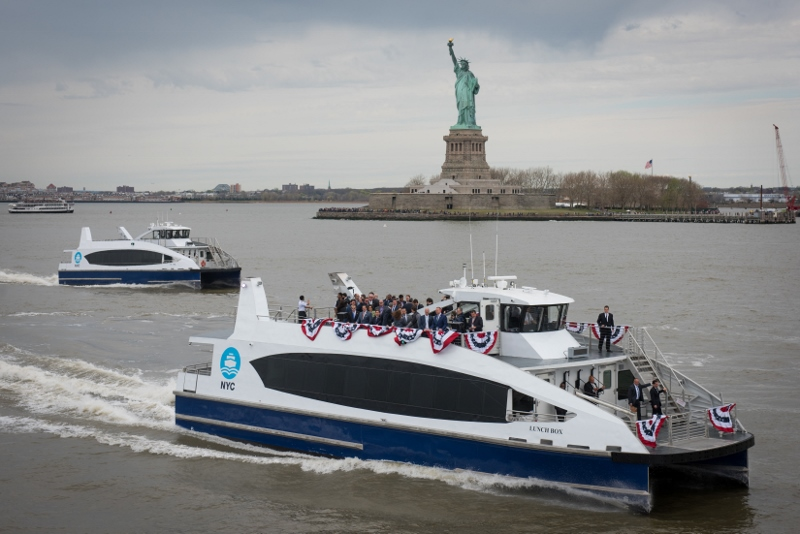

| Transportation Option | Description | Fares | Kids | Senior |
|---|
| Subway | Rapid transit system with extensive coverage. | $2.90 per ride | Free (up to 3 year old) | Reduced Fares |
| Bus | Public bus service with various routes. | $2.90 per ride | Free (up to 3 year old | Reduced Fares |
| Taxi | Cabs available for hire throughout the city. | Metered fare, starting at $3.00 | | |
| LIRR | Long Island Rail Road for commuting to Long Island. | $7.75 for a one-way ticket | | |
| Bicycle | Biking is a popular and eco-friendly option. | $12 for a monthly pass | | |
| Ferry | Water transportation connecting different boroughs. | $2.90 per ride | | |
| Walking | A great way to explore the city at your own pace. | Free! | | |


 
